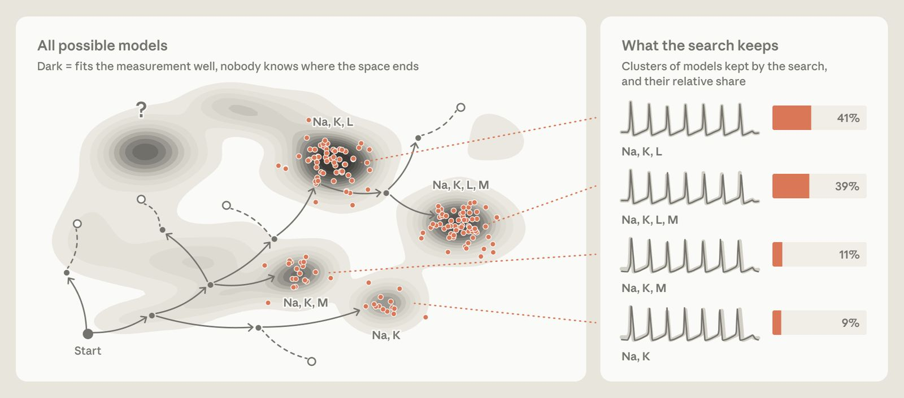
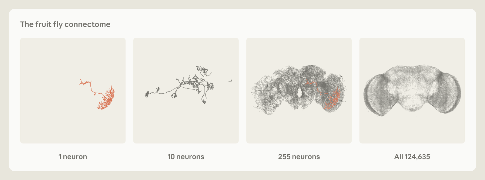

AI for Science grantees Jakob Macke, Daniel Gedon, and Stefan Wahl are researchers at the ELLIS Institute Tübingen and the University of Tübingen, where they build AI tools for developing scientific models in neuroscience and beyond. In this guest post, they discuss how AI is starting to change scientific modeling.
In 1951, Cambridge University’s computer went out of action for six months. This was inconvenient for physiologist Andrew Huxley, who, alongside his colleague Alan Hodgkin, had just built a set of equations to describe how a particular squid nerve cell fired. The scientists wanted to understand the “action potential” of these nerve cells: the electrical pulses they use to communicate, which underlie everything brains do, from perception to intelligence. The only way to find out whether the equations worked was to solve them and compare the solutions to data.
Huxley had hoped to use the newfangled computer to solve the equations. Instead, he was forced to solve them using a hand-cranked mechanical calculator. It took him over three weeks.
The basic structure of their model was dictated by known facts about the cell. Hodgkin and Huxley modeled its membrane as an electrical circuit. One part of the model, however, was just an educated guess. In order to make the curve fit the data they had measured, they found that they had to raise one variable to the fourth power—that is, to multiply it by itself three times. At the time, they did not know why. They just knew that otherwise the model didn’t predict the observed data as well.
They did offer a hypothesis, however. They cautiously suggested that the variable in question, which governed how particular gates in the cell membrane opened, might require the fourth power because multiple charged particles in the membrane had to move into place before the gate would open.
Decades later, long after both Hodgkin and Huxley had won the Nobel Prize in Physiology or Medicine in 1963, another team found the structure of a related potassium channel protein. And they discovered that, yes, it had four identical pieces arranged around a central pore. The model was fit to the data in 1951. Even then, it predicted how fast the impulse travels relatively accurately. More than that, it turned out to have helped predict the structure of potassium ion channels themselves, which it had never been fit to.
Today, an AI system could plausibly find an equation like Hodgkin and Huxley’s in an afternoon, and perhaps it would fit the experimental data even more closely. But the point of the story is that simply knowing the fourth power did the job was not enough; what mattered was knowing that a simpler version of the model did not work. An AI system that merely hands you the model might give you an answer, but it does not give you understanding. Reproducing the data with a model is insufficient, because any number of models could do the same. What matters is being able to make claims about the real-world system itself, and ideally about other, similar systems. To do so, you need to know which features the model shares with other models that work, and which set it apart from models that don’t. As the mathematician Richard Hamming wrote in 1962, “The purpose of computing is insight, not numbers.”
A three-step program
More than 70 years on, the Hodgkin-Huxley model remains the standard description of electrical activity in neurons. The same kinds of equations, with different constants, describe nerve cells across the animal kingdom, from squids to humans, even though our evolutionary lineages separated more than half a billion years ago.
Even more important than its longevity, however, is what the Hodgkin-Huxley model tells us about how models work. Hodgkin and Huxley’s approach can be broken down into three steps, and most scientific modeling involves some version of them.
- The first is building the model. This means deciding what the model is made of and what shape its equations take. In Hodgkin and Huxley’s case, that meant the parts of the electrical circuit—the membrane and the gates—and the form of the equations, such as raising the underlying variable to the fourth power.
- The second is constraining the model—tuning its adjustable parameters to fit real measurements. For Hodgkin and Huxley, that included settings like how often the gates open under different voltages.
- The third is interpreting the model—asking what the model says about the real system, such as suggesting that the fourth power meant the gate had four moving parts.
In practice, scientists go through these steps repeatedly. If the numbers fail to fit the measurements, or if the interpretation makes no sense, they go back and revise.
All three steps were once done by people, but AI systems are increasingly involved in each of them. Machines have arguably made the most progress in constraining models, so we’ll start there.
Splitting the bill, or how to constrain models
When Hodgkin and Huxley constrained their model by eye and intuition, they ended up with a single set of numbers. This told them that the model could match the data. It didn’t tell them whether other numbers would have worked just as well or even better.
Imagine you know that a group dinner added up to $120, but not who ordered what. Many different combinations of orders could have added up to that amount—perhaps everyone ordered a mid-priced burger, or perhaps one person had steak and lobster while everyone else had soup. Models of nerve cells work on the same principle: different combinations of gate parameters can produce near-identical electrical activity. Simply showing one combination that fits well hides all the other plausible parameter settings, and other combinations might have led to different predictions. This is true of almost any phenomenon being modeled. Many different sets of parameters can explain the observed data equally well.
An illustration of constraining the Hodgkin-Huxley model. (1) A measurement from a nerve cell. (2) How likely the measurement is for each combination of potassium and sodium channel settings. Darker means a better fit. The blue dot is interactive. (3) Simulations of the model at three settings, compared to the measurement (gray). Some fit well, while others do not.
The solution is a statistical method called Bayesian inference. It gives you every set of numbers that works reasonably well, as a probability distribution that takes into account their fit to the data and your prior knowledge about the parameters. The distribution takes the shape of a curve, with the best fits at the peak and the weaker ones at the fringes.
But this method has usually been impractical for complex models, because it involves calculating how likely your measurements would be under every possible set of numbers. In Hodgkin and Huxley’s model, that would still be feasible, but for anything more complicated, it would be computationally impossible. For example, if each of the thousands of ion channels opens and closes at random, you would have to work out every combination. Returning to our restaurant bill analogy: it would be easy to answer, “If person A had the burger and person B had the steak, what would the bill come to?” but much harder to show which combinations could have led to the final bill, especially as the number of people and menu options grows.
A different approach called simulation-based inference (SBI) overcomes this reverse-engineering problem with sheer computation. You pick random parameters, run the model, and record the output. You do it again and again—perhaps 100,000 times for a model like Hodgkin-Huxley, and millions of times for larger, more complex ones. Then you train a neural network on the results so that, given an output, it can return the range of parameters that could have produced it.
All SBI requires is that you can run the model: put in a set of parameters and get back the kind of data you would expect to see. A model you can run like this—parameters in, data out—is called a simulator, hence the name “simulation-based inference.” You never need to use a formula to calculate how likely your measurements are, which is the step that makes standard Bayesian inference often impractical. These days a simulator is usually a computer program, but it doesn’t have to be: Huxley, cranking through the equations by hand, was running one. Many simulators are easy to run forward but impossible to reverse. Some can’t even be written out as a tidy equation—their assumptions are built into the rules they follow—but they are models nonetheless. For many complex phenomena, from networks of neurons to colliding galaxies, simulators are often the only kind of model we have. SBI lets us constrain those models with data.
Running all those simulations is expensive and can take weeks. But once it is done, a trained network can perform inference on new data in seconds, without requiring further simulations. That speed has changed what’s possible. When two neutron stars collide, SBI can work out roughly where in the sky the collision happened, fast enough to point telescopes at it while the signal is still detectable. The same approach has been successfully applied to problems in cosmology, structural biology, geophysics, and many other domains.
And SBI has been applied to nerve cell models, including the Hodgkin-Huxley model. Because it returns a distribution rather than a single fit, we can see which parameters are well constrained by the data, where more than one explanation is plausible, and where more data—and thus another experiment—is most needed.
The bill, one level up, or how to build models
Before you can constrain a model, you need a model to constrain. The equations of the Hodgkin-Huxley model were not derived from first principles. Instead, the fourth power of the underlying variable emerged empirically from the scientists’ biological insight, and from finding that simpler versions didn’t work as well.
For most of the history of science, this is how models have been built. Scientists used their expertise and assumptions to write down a candidate model. Then they tested it, revised it, and tried again. The problem is that the space of possible models is essentially infinite, and a scientist proposing a handful of models from experience will very likely miss models that could have explained the observational data equally well.
AI systems can now help with, or even take over, this step. Given some data and a natural-language description of a system, an LLM-based agent writes code for a candidate model or a set of candidate models. Then it runs the model, constrains its parameters, compares the output to real-world data, and revises it, perhaps by modifying the form of an equation. This loop repeats until the model replicates the data accurately enough. Several such systems have appeared in the past two years.1 The details vary, but all use an LLM to design the model itself. Until recently, this was thought to be something only humans could do.
But the fact that a model replicates data doesn’t mean that it provides insight. As with the restaurant bill, or the Hodgkin-Huxley parameters, many different combinations of parameters within a single model can provide the same output. The same is true one level up, for the model itself: many different models, with differently shaped equations, can explain the same data equally well. Run an agent twice on the same data, and it might return two different, and equally good, models. An agent that returns only one of them is hiding the rest, just as a single best-fit set of numbers does.

So it is better to treat building a model the same way we treat constraining one: you ask for the whole range of models that could plausibly explain the data.2 The AI system proposes many candidates. Each is then weighted by how much it is supported by the data, and the ones that need a lot of flexibility to fit are given less credit than those that fit naturally. The weak candidates drop out, and the AI system proposes new variations on the stronger ones.
AI agents can thus provide a distribution of plausible models, rather than a single best fit, and that distribution tells you things a single model can’t. If every surviving model shares a feature, the data likely favors it. If the survivors disagree, that shows where the evidence is thin, and points researchers in the direction of the next experiment.
We shouldn’t get too far ahead of ourselves. So far, these systems have mostly been tested on rediscovering models that scientists already know. Evidence that they work on problems with no known answer is sparse. Still, newer LLMs perform better at research tasks than older ones, and we expect these systems to keep improving.
Lost in translation, or how to interpret models
Once a model has been built and constrained, it still has to be interpreted. What does it tell us about the real system being studied? Hodgkin and Huxley’s four-particle hypothesis came about because equations involving the fourth power are what you would expect if four separate things all had to happen before a gate could open. So they suggested that this might be what was happening inside the membrane. As we saw above, they turned out to be largely right.
That interpretation only carried weight because of what they had ruled out. If a simpler model had worked just as well, there would have been no reason to think the gate had several moving parts. It was the failure of the alternatives that allowed them to make that claim. There was some uncertainty about the exact number: Hodgkin and Huxley noted that a third or fourth power was needed and settled on four. They wrote that higher powers might even have fit slightly better, but that the potential “improvement was not considered to be worth the additional complication.”
The equations also let Hodgkin and Huxley reason out several other implications. For instance, the equations explained why nerve cells have a voltage threshold below which they don’t fire and above which they do, and why nerve pulses all have the same shape. They also predicted that a current rising slowly enough would never make the cell fire. Philosophers of science call a theory “intelligible” if it lets you work out its consequences without having to run it. That test works for a model with a handful of variables, like Hodgkin-Huxley. For a larger model with perhaps thousands of variables, the equivalent might be whether we can boil it down to a few crucial mechanistic ideas that are enough to rebuild it. The larger the model, the harder that becomes.
Of the three steps, interpretation is the hardest to hand over to AI. The goal is harder to pin down: we can measure how well a model fits the data, but not whether it leads to a better understanding of the system, and it’s not clear how to tell an AI system to make “understanding” its objective. One proposal is to judge an AI system’s understanding by seeing how well it predicts what a system does when you disturb that system. Another is to sidestep the question altogether, and instead ask whether the agent’s outputs help human scientists better understand the problem. One example is an AI system for designing quantum experiments. Rather than providing a single setup, it was trained to write a short program that generates the setups for a whole family of related experiments. A physicist can then read the underlying design principle straight off the program instead of reverse-engineering it from one experimental setup.
In both approaches, having access to a full distribution of suitable models, rather than a single best-fitting one, is crucial for interpretation. A single model cannot tell us which of its parts are actually constrained by the data, so it’s easy to read meaning into parts that are not. In Hodgkin-Huxley, as we’ve seen, the hypothesis about four particles only makes sense if you know that lower powers don’t work as well. A range of models also makes predictions more robust. Say you ask your models what happens when you disturb a system—for instance, by blocking all, or only some, of the sodium gates on the cell membrane. If all the models that fit the data return the same answer, as you would expect when every gate is blocked, then you can be fairly confident in it. If they disagree, as they might when only some gates are blocked, that can provide ideas for the next experiment.
Cells and scales
Most famous models, including Hodgkin-Huxley, are compact. They consist of a handful of variables and equations, small enough for a human scientist to write down and reason about. That’s no coincidence: they needed to be compact, because people had to build, constrain, and interpret them. Their smallness is also what made them intelligible. But as AI takes over more of the work, the size limit will start to lift. We can begin to model systems that are far too complex to write down by hand, even if we can no longer understand them just by reading the equations.
Brains are an obvious use case. The Hodgkin-Huxley equations describe a single nerve cell. But a fruit fly’s brain contains more than 100,000, and a human brain tens of billions. And it is the interplay between those neurons that gives rise to behavior and thought. For the fruit fly, we now have something that was impossible for previous generations of scientists: a complete wiring diagram of its brain, showing every neuron and how it connects to the others.3 Researchers have started building large-scale models on top of it, including one that predicts the activity of neurons across the fly’s visual system. That opens up questions nobody could sensibly ask before. How does a whole brain turn its wiring into behavior? How much of an animal’s behavior can be predicted from its wiring alone? And which connections actually matter?
But at these scales it will not be possible to find a single correct model. Indeed, in most cases there is no such thing. As the statistician George Box wrote, “All models are wrong but some are useful.” The data will always be compatible with many models. The question will no longer be which model is the right one, but which properties all data-compatible models share, and which predictions can be derived from them. The most useful experiments will be those that rule out the greatest number of remaining models, even if they are not always the ones a human scientist finds the most interesting.

This isn’t unique to neuroscience. Climate scientists already work like this: they build many gigantic numerical simulations, each based on slightly different assumptions, and report their projections as the spread across all of them. Particle physicists at the Large Hadron Collider work in a similar spirit: when they look for a new particle, they don’t just declare whether a particular theory worked or not; they produce a map of which versions of the theory are ruled out by the data and which remain open.
The painstaking work Hodgkin and Huxley did—building the model, fitting each curve by eye, trying the powers that didn’t fit, and, in Huxley’s case, spending three weeks hand-cranking the mechanical calculator—is not something we want to go back to. But it was not wasted. Much of the insight that a model provides comes from the process of creating it; Hodgkin and Huxley understood what the model was telling them because they had built it themselves, and they knew what hadn’t worked. This understanding let them formulate their interpretation of gating variables—part of the discovery that ultimately earned them the Nobel Prize.
An AI system could now plausibly do much of the same work in an afternoon. But to offer understanding, it needs to deliver what the two scientists’ slow work produced: not just the model that fits, but an account of which parts are pinned down by the data, which are still open, which alternatives failed along the way, and what new puzzles were uncovered in the process. A scientific model may provide an answer, but it is the process of constructing it that provides the insight.